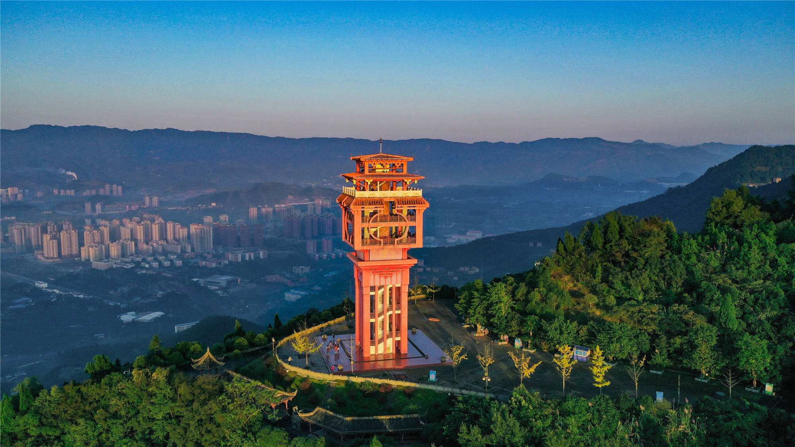
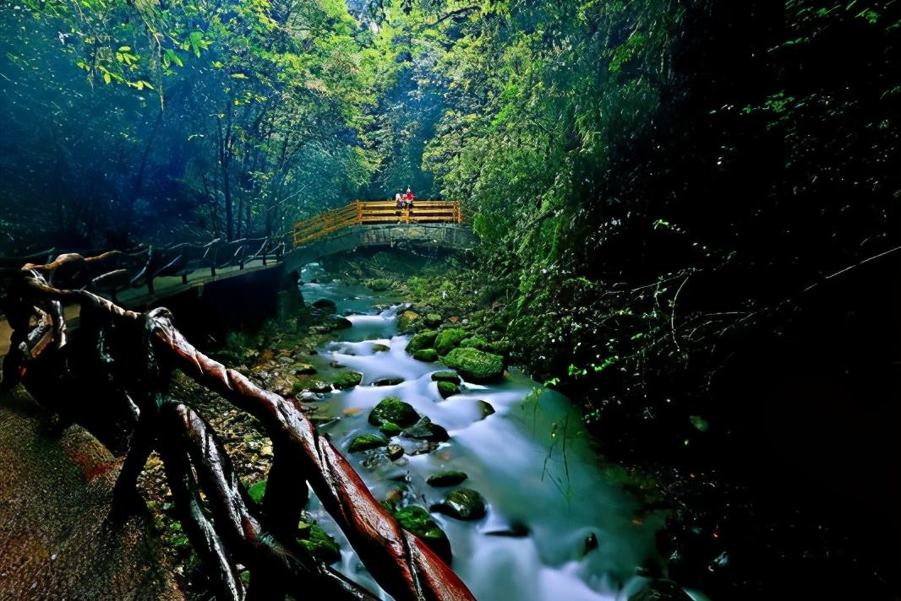
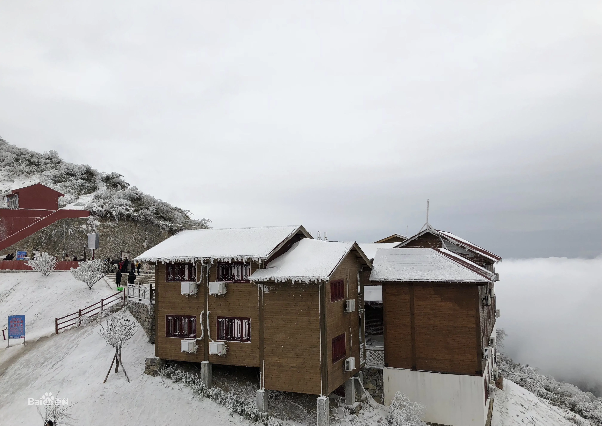
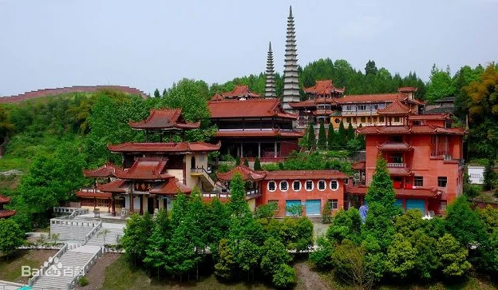
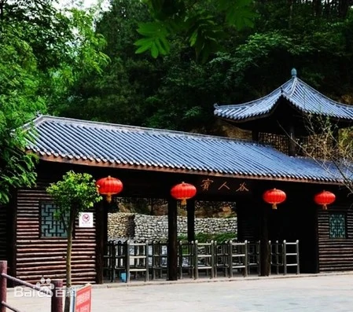
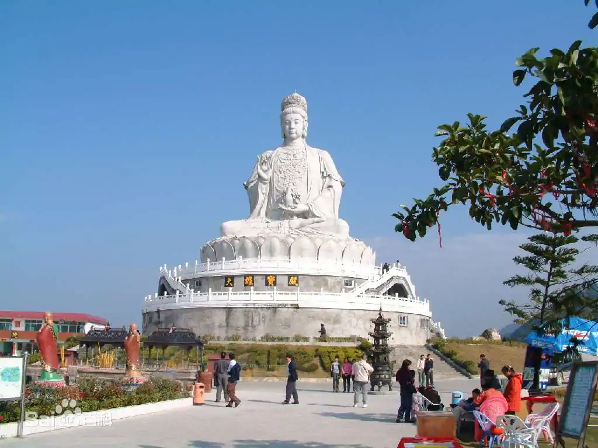
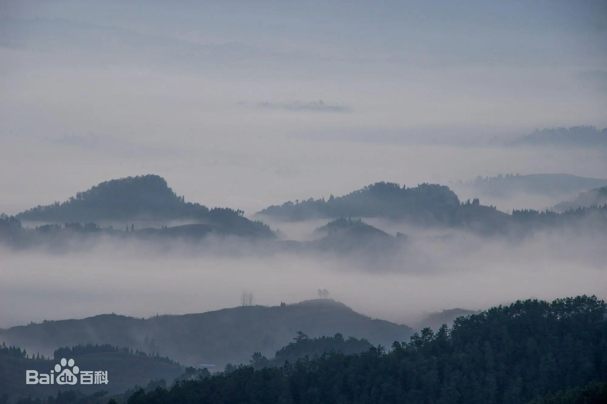
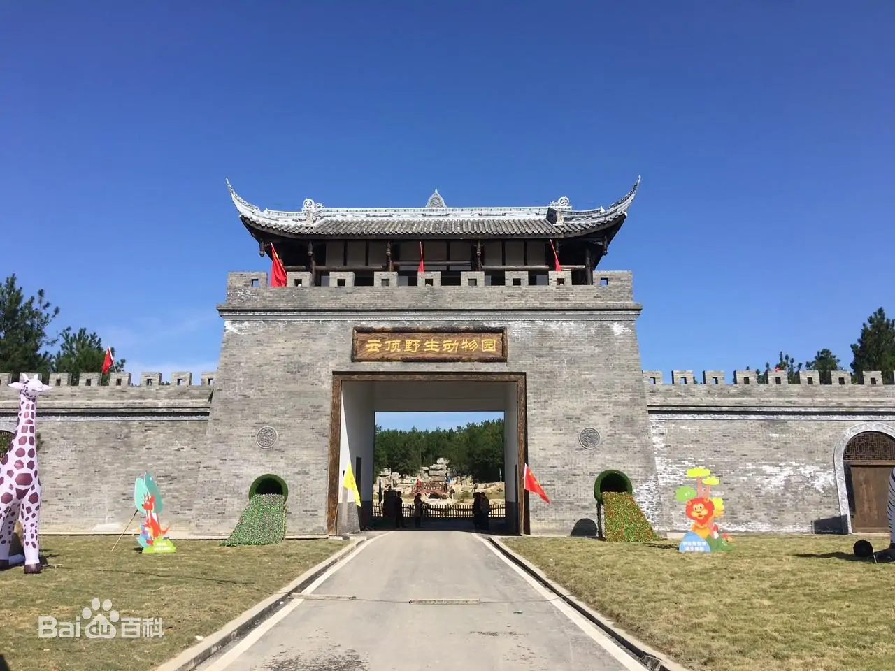
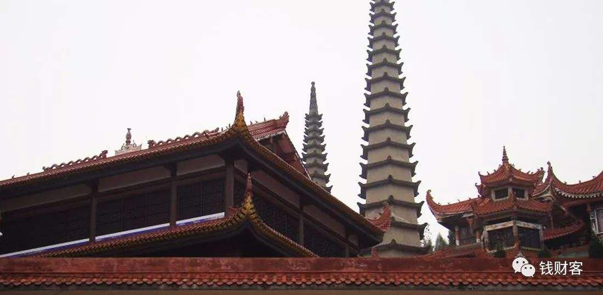
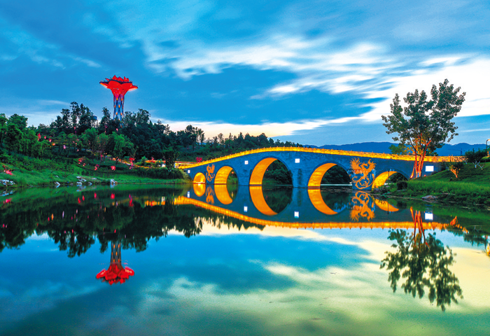

风景名胜
邵东市境内旅游资源有唐代名士申太芝所居之大云山、唐肃宗御笔钦题的佘湖山、宋濂溪周子洗墨（周敦颐）的九龙岭，昭阳候城遗址，畔塘水库烟竹岩、明代建筑群荫家堂、朋山塘古屋、洪桥、水东江长道冲千年古枫群及佘湖山古寺佛地农兴堂的希其坳等。
| 简介 | 图片 | |
|---|---|---|
| 昭阳公园 |
昭阳公园位于湖南省邵东城西部、沪昆高速公路邵东入口处以南。坐落于宋家塘街道办事处软塘村、麦子口村、新辅台社区地段，东临东方家居广场，南为格林春天住宅小区。公园一共占地730亩，共分为五大景观元素，主要景区包括入口引导区、文化游乐区、休闲娱乐区、植物观赏区、运动康体区等五大功能区。 |
 |
| 古奇洞十景 |
古奇洞位于邵东东南约15千米外的双凤乡。古奇洞有十大（过去说八景）自然景观：第一景，双龙抢宝。第二景，石船夜渡。第三景，仙石险坠。第四景，鞭石架桥。第五景，天马横江。第六景，雷祖晚照。第七景，犀牛踏石。第八景，双凤朝阳。第九景，白龙献技。第十景，高山平湖。 大云山风景区 |
 |
| 大云山风景区 |
大云山脉位于邵东、衡阳、祁东三地交界处，是衡山山脉的南方余脉。最高主峰——小云山坐落于邵东市东南边陲的堡面前乡，俗名大牛山，别名耶姜山，又名白云峰，属南岳七十二峰之一。区内地形逶迤，奇峰突兀，动植物资源丰富。 主要景点：地中缝，南天柱，一线天，鸭婆石，坚根石，青蛙石，鸡冠峰，姊妹石，狮子石，道士石，乌龟洞。 |
 |
| 昭阳侯国故城遗址 |
昭阳侯国故城遗址即位于邵东市黄陂桥乡同意村，遗址呈长方形，东西宽250米，南北长350米。四周保存有夯土城墙，城墙残长约100米，宽5至8米，高3至4米，夯层厚0.3米，四角有城楼台基。曾出土青铜剑、铁刀、方格纹陶罐、砖、瓦等物件。 |
 |
| 佘湖山云霖寺 |
佘湖山云霖寺位于邵东市西南部，佘湖山上的云霖寺是一座历史悠久的佛教寺庙，以其精美的建筑和周围的自然风光而著称。 |
 |
| 九龙岭翰墨池 |
九龙岭翰墨池位于邵东市西北部，是一处著名的旅游景点，也是一处著名的旅游胜地。翰墨池是一座世界级的水上自然奇景，是世界自然遗产之一。池水清澈，湖水湛蓝，翠绿的翰墨映衬着池塘，使人们感受到自然的宁静和自然的魅力。 |
 |
| 荫家堂和山塘古屋 |
荫家堂和山塘古屋位于邵东市东南部，是一座历史悠久的古建筑群，建于清代，是邵东市著名的风景名胜。山塘古屋原名“山塘”，因其形似山而得名。山塘古屋原为一座石塔，高150米，宽10米。 |
 |
| 洪桥 |
洪桥位于邵东市西北部，是一座历史悠久的桥梁，是邵东市著名的风景名胜。洪桥作为邵东的一处古迹，承载着历史的记忆，是研究当地古代桥梁建筑技术的重要实例。 |
 |
| 竹坪岭景区 |
竹坪岭景区位于邵东市东南部，是一座历史悠久的风景名胜，是邵东市著名的风景名胜。竹坪岭景区原名“竹坪”，因其形似竹而得名。竹坪岭景区原为一座石坝，高100米，宽10米。 |
 |
| 龙公桥 |
龙公桥位于邵东市西北部，是一座历史悠久的桥梁，是邵东市著名的风景名胜。龙公桥是一座世界级的桥梁，是世界自然遗产之一。桥梁的外形像一座巨大的龙，桥面宽阔，桥下有一座小型的石塔，是一座具有世界文化价值的桥梁。 |
 |